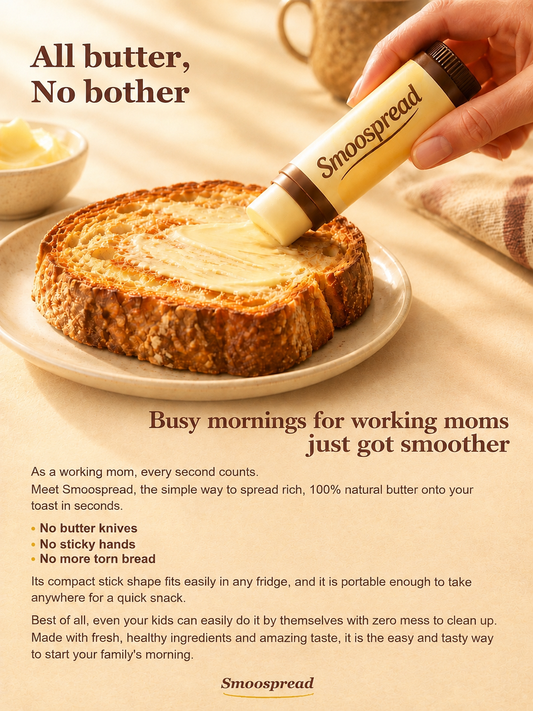

Media English Assignment · Advertisement
Smoospread
For this assignment, our group picked a "useless invention": butter in a stick, like a glue stick. We named it Smoospread and made a one-page magazine ad for busy working moms. The catchphrase is "All butter, No bother."

My Thoughts
Reflection
For this ad, I used AI to make the advertisement image. I told it the mood I wanted, a warm and cozy breakfast table, and it made an image that matched it really well. I could also change small things quickly, like the catchphrase, the layout, and where the logo goes, until it looked like a real magazine ad. It saved a lot of time, so I would like to use AI like this at work in the future too.